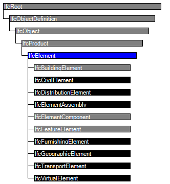
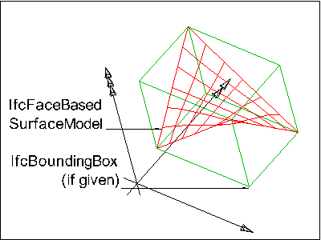

Natural language names
 | Element (allgemein) |
 | Element |
 | Élément |
| Element (allgemein) |
| Element |
| Élément |
An element is a generalization of all components that make up an AEC product.
Elements are physically existent objects, although they might be void elements, such as holes. Elements either remain permanently in the AEC product, or only temporarily, as formwork does. Elements can be either assembled on site or pre-manufactured and built in on site.
EXAMPLE Examples of elements in a building construction context are walls, floors, windows and recesses.
The elements can be logically contained by a spatial structure element that constitutes a certain level within a project structure hierarchy (site, building, storey or space). This is done by using the IfcRelContainedInSpatialStructure relationship. An element can have material and quantity information assigned through the IfcRelAssociatesMaterial and IfcRelDefinesByProperties relationship.
In addition an element can be declared to be a specific occurrence of an element type (and thereby be defined by the element type properties) using the IfcRelDefinesByType relationship. An element can also be defined as an element assembly that is a group of semantically and topologically related elements that form a higher level part of the AEC product. Those element assemblies are defined by virtue of the IfcRelAggregates relationship.
EXAMPLE Examples for element assembly are complete Roof Structures, made by several Roof Areas, or a Stair, composed by Flights and Landings.
Elements that performs the same function may be grouped by an "Element Group By Function". It is realized by an instance of IfcGroup with the ObjectType ='ElementGroupByFunction'.
HISTORY New entity in IFC1.0
| # | Attribute | Type | Cardinality | Description | C |
|---|---|---|---|---|---|
| 8 | Tag | IfcIdentifier | [0:1] | The tag (or label) identifier at the particular instance of a product, e.g. the serial number, or the position number. It is the identifier at the occurrence level. | X |
| FillsVoids | IfcRelFillsElement @RelatedBuildingElement | S[0:1] | Reference to the IfcRelFillsElement Relationship that puts the element as a filling into the opening created within another element. | X | |
| ConnectedTo | IfcRelConnectsElements @RelatingElement | S[0:?] | Reference to the element connection relationship. The relationship then refers to the other element to which this element is connected to. | X | |
| IsInterferedByElements | IfcRelInterferesElements @RelatedElement | S[0:?] | Reference to the interference relationship to indicate the element that is interfered. The relationship, if provided, indicates that this element has an interference with one or many other elements.
NOTE There is no indication of precedence between IsInterferedByElements and InterferesElements. | X | |
| InterferesElements | IfcRelInterferesElements @RelatingElement | S[0:?] | Reference to the interference relationship to indicate the element that interferes. The relationship, if provided, indicates that this element has an interference with one or many other elements.
NOTE There is no indication of precedence between IsInterferedByElements and InterferesElements. | X | |
| HasProjections | IfcRelProjectsElement @RelatingElement | S[0:?] | Projection relationship that adds a feature (using a Boolean union) to the IfcBuildingElement. | X | |
| ReferencedInStructures | IfcRelReferencedInSpatialStructure @RelatedElements | S[0:?] | Reference relationship to the spatial structure element, to which the element is additionally associated. This relationship may not be hierarchical, an element may be referenced by zero, one or many spatial structure elements. | X | |
| HasOpenings | IfcRelVoidsElement @RelatingBuildingElement | S[0:?] | Reference to the IfcRelVoidsElement relationship that creates an opening in an element. An element can incorporate zero-to-many openings. For each opening, that voids the element, a new relationship IfcRelVoidsElement is generated. | X | |
| IsConnectionRealization | IfcRelConnectsWithRealizingElements @RealizingElements | S[0:?] | Reference to the connection relationship with realizing element. The relationship, if provided, assigns this element as the realizing element to the connection, which provides the physical manifestation of the connection relationship. | X | |
| ProvidesBoundaries | IfcRelSpaceBoundary @RelatedBuildingElement | S[0:?] | Reference to space boundaries by virtue of the objectified relationship IfcRelSpaceBoundary. It defines the concept of an element bounding spaces. | X | |
| ConnectedFrom | IfcRelConnectsElements @RelatedElement | S[0:?] | Reference to the element connection relationship. The relationship then refers to the other element that is connected to this element. | X | |
| ContainedInStructure | IfcRelContainedInSpatialStructure @RelatedElements | S[0:1] | Containment relationship to the spatial structure element, to which the element is primarily associated. This containment relationship has to be hierachical, i.e. an element may only be assigned directly to zero or one spatial structure. | X | |
| HasCoverings | IfcRelCoversBldgElements @RelatingBuildingElement | S[0:?] | Reference to IfcCovering by virtue of the objectified relationship IfcRelCoversBldgElement. It defines the concept of an element having coverings associated. | X |

| # | Attribute | Type | Cardinality | Description | C |
|---|---|---|---|---|---|
| IfcRoot | |||||
| 1 | GlobalId | IfcGloballyUniqueId | [1:1] | Assignment of a globally unique identifier within the entire software world. | X |
| 2 | OwnerHistory | IfcOwnerHistory | [0:1] |
Assignment of the information about the current ownership of that object, including owning actor, application, local identification and information captured about the recent changes of the object,
NOTE only the last modification in stored - either as addition, deletion or modification. | X |
| 3 | Name | IfcLabel | [0:1] | Optional name for use by the participating software systems or users. For some subtypes of IfcRoot the insertion of the Name attribute may be required. This would be enforced by a where rule. | X |
| 4 | Description | IfcText | [0:1] | Optional description, provided for exchanging informative comments. | X |
| IfcObjectDefinition | |||||
| HasAssignments | IfcRelAssigns @RelatedObjects | S[0:?] | Reference to the relationship objects, that assign (by an association relationship) other subtypes of IfcObject to this object instance. Examples are the association to products, processes, controls, resources or groups. | X | |
| Nests | IfcRelNests @RelatedObjects | S[0:1] | References to the decomposition relationship being a nesting. It determines that this object definition is a part within an ordered whole/part decomposition relationship. An object occurrence or type can only be part of a single decomposition (to allow hierarchical strutures only). | X | |
| IsNestedBy | IfcRelNests @RelatingObject | S[0:?] | References to the decomposition relationship being a nesting. It determines that this object definition is the whole within an ordered whole/part decomposition relationship. An object or object type can be nested by several other objects (occurrences or types). | X | |
| HasContext | IfcRelDeclares @RelatedDefinitions | S[0:1] | References to the context providing context information such as project unit or representation context. It should only be asserted for the uppermost non-spatial object. | X | |
| IsDecomposedBy | IfcRelAggregates @RelatingObject | S[0:?] | References to the decomposition relationship being an aggregation. It determines that this object definition is whole within an unordered whole/part decomposition relationship. An object definitions can be aggregated by several other objects (occurrences or parts). | X | |
| Decomposes | IfcRelAggregates @RelatedObjects | S[0:1] | References to the decomposition relationship being an aggregation. It determines that this object definition is a part within an unordered whole/part decomposition relationship. An object definitions can only be part of a single decomposition (to allow hierarchical strutures only). | X | |
| HasAssociations | IfcRelAssociates @RelatedObjects | S[0:?] | Reference to the relationship objects, that associates external references or other resource definitions to the object.. Examples are the association to library, documentation or classification. | X | |
| IfcObject | |||||
| 5 | ObjectType | IfcLabel | [0:1] |
The type denotes a particular type that indicates the object further. The use has to be established at the level of instantiable subtypes. In particular it holds the user defined type, if the enumeration of the attribute PredefinedType is set to USERDEFINED.
| X |
| IsDeclaredBy | IfcRelDefinesByObject @RelatedObjects | S[0:1] | Link to the relationship object pointing to the declaring object that provides the object definitions for this object occurrence. The declaring object has to be part of an object type decomposition. The associated IfcObject, or its subtypes, contains the specific information (as part of a type, or style, definition), that is common to all reflected instances of the declaring IfcObject, or its subtypes. | X | |
| Declares | IfcRelDefinesByObject @RelatingObject | S[0:?] | Link to the relationship object pointing to the reflected object(s) that receives the object definitions. The reflected object has to be part of an object occurrence decomposition. The associated IfcObject, or its subtypes, provides the specific information (as part of a type, or style, definition), that is common to all reflected instances of the declaring IfcObject, or its subtypes. | X | |
| IsTypedBy | IfcRelDefinesByType @RelatedObjects | S[0:1] | Set of relationships to the object type that provides the type definitions for this object occurrence. The then associated IfcTypeObject, or its subtypes, contains the specific information (or type, or style), that is common to all instances of IfcObject, or its subtypes, referring to the same type. | X | |
| IsDefinedBy | IfcRelDefinesByProperties @RelatedObjects | S[0:?] | Set of relationships to property set definitions attached to this object. Those statically or dynamically defined properties contain alphanumeric information content that further defines the object. | X | |
| IfcProduct | |||||
| 6 | ObjectPlacement | IfcObjectPlacement | [0:1] | Placement of the product in space, the placement can either be absolute (relative to the world coordinate system), relative (relative to the object placement of another product), or constraint (e.g. relative to grid axes). It is determined by the various subtypes of IfcObjectPlacement, which includes the axis placement information to determine the transformation for the object coordinate system. | X |
| 7 | Representation | IfcProductRepresentation | [0:1] | Reference to the representations of the product, being either a representation (IfcProductRepresentation) or as a special case a shape representations (IfcProductDefinitionShape). The product definition shape provides for multiple geometric representations of the shape property of the object within the same object coordinate system, defined by the object placement. | X |
| ReferencedBy | IfcRelAssignsToProduct @RelatingProduct | S[0:?] | Reference to the IfcRelAssignsToProduct relationship, by which other products, processes, controls, resources or actors (as subtypes of IfcObjectDefinition) can be related to this product. | X | |
| IfcElement | |||||
| 8 | Tag | IfcIdentifier | [0:1] | The tag (or label) identifier at the particular instance of a product, e.g. the serial number, or the position number. It is the identifier at the occurrence level. | X |
| FillsVoids | IfcRelFillsElement @RelatedBuildingElement | S[0:1] | Reference to the IfcRelFillsElement Relationship that puts the element as a filling into the opening created within another element. | X | |
| ConnectedTo | IfcRelConnectsElements @RelatingElement | S[0:?] | Reference to the element connection relationship. The relationship then refers to the other element to which this element is connected to. | X | |
| IsInterferedByElements | IfcRelInterferesElements @RelatedElement | S[0:?] | Reference to the interference relationship to indicate the element that is interfered. The relationship, if provided, indicates that this element has an interference with one or many other elements.
NOTE There is no indication of precedence between IsInterferedByElements and InterferesElements. | X | |
| InterferesElements | IfcRelInterferesElements @RelatingElement | S[0:?] | Reference to the interference relationship to indicate the element that interferes. The relationship, if provided, indicates that this element has an interference with one or many other elements.
NOTE There is no indication of precedence between IsInterferedByElements and InterferesElements. | X | |
| HasProjections | IfcRelProjectsElement @RelatingElement | S[0:?] | Projection relationship that adds a feature (using a Boolean union) to the IfcBuildingElement. | X | |
| ReferencedInStructures | IfcRelReferencedInSpatialStructure @RelatedElements | S[0:?] | Reference relationship to the spatial structure element, to which the element is additionally associated. This relationship may not be hierarchical, an element may be referenced by zero, one or many spatial structure elements. | X | |
| HasOpenings | IfcRelVoidsElement @RelatingBuildingElement | S[0:?] | Reference to the IfcRelVoidsElement relationship that creates an opening in an element. An element can incorporate zero-to-many openings. For each opening, that voids the element, a new relationship IfcRelVoidsElement is generated. | X | |
| IsConnectionRealization | IfcRelConnectsWithRealizingElements @RealizingElements | S[0:?] | Reference to the connection relationship with realizing element. The relationship, if provided, assigns this element as the realizing element to the connection, which provides the physical manifestation of the connection relationship. | X | |
| ProvidesBoundaries | IfcRelSpaceBoundary @RelatedBuildingElement | S[0:?] | Reference to space boundaries by virtue of the objectified relationship IfcRelSpaceBoundary. It defines the concept of an element bounding spaces. | X | |
| ConnectedFrom | IfcRelConnectsElements @RelatedElement | S[0:?] | Reference to the element connection relationship. The relationship then refers to the other element that is connected to this element. | X | |
| ContainedInStructure | IfcRelContainedInSpatialStructure @RelatedElements | S[0:1] | Containment relationship to the spatial structure element, to which the element is primarily associated. This containment relationship has to be hierachical, i.e. an element may only be assigned directly to zero or one spatial structure. | X | |
| HasCoverings | IfcRelCoversBldgElements @RelatingBuildingElement | S[0:?] | Reference to IfcCovering by virtue of the objectified relationship IfcRelCoversBldgElement. It defines the concept of an element having coverings associated. | X | |
Property Sets for Objects
The Property Sets for Objects concept applies to this entity as shown in Table 43.
| ||||||||||||||||||||||||||||||||||||||||||||||||||||||||||||||||||||||||||||||||||||||||||||||||||||||||||||||||||||||||||||||||||||||||||||||||||||||||||||||||||||||||||||||
Table 43 — IfcElement Property Sets for Objects |
Product Local Placement
The Product Local Placement concept applies to this entity as shown in Table 44.
| ||||||||||||
Table 44 — IfcElement Product Local Placement |
The object placement for any subtype of IfcElement is defined by the IfcObjectPlacement, either IfcLocalPlacement or IfcGridPlacement, which defines the local object coordinate system that is referenced by all geometric representations of that IfcElement.
Box Geometry
The Box Geometry concept applies to this entity.
 |
EXAMPLE Any IfcElement may be represented by a bounding box, which shows the maximum extend of the body within the object coordinate system established by the IfcObjectPlacement. As shown in Figure 139, the bounding box representation is given by an IfcShapeRepresentation that includes a single item, an IfcBoundingBox. |
Figure 139 — Building element box representation |
FootPrint Geometry
The FootPrint Geometry concept applies to this entity as shown in Table 45.
| ||||||||||||
Table 45 — IfcElement FootPrint Geometry |
Body SurfaceOrSolidModel Geometry
The Body SurfaceOrSolidModel Geometry concept applies to this entity.
Any IfcElement (so far no further constraints are defined at the level of its subtypes) may be represented as a mixed representation, including surface and solid models.
Body SurfaceModel Geometry
The Body SurfaceModel Geometry concept applies to this entity.
Any IfcElement (so far no further constraints are defined at the level of its subtypes) may be represented as a single or multiple surface models, based on either shell or face based surface models. It may also include tessellated models.
 |
EXAMPLE As shown in Figure 140, the surface model representation is given by an IfcShapeRepresentation, which includes a single item which is either an IfcShellBasedSurfaceModel, or an IfcFaceBasedSurfaceModel. In some cases it may also be useful to expose a simple representation as a bounding box representation of the same complex shape. |
|
Figure 140 — Element surface model representation |
Body Tessellation Geometry
The Body Tessellation Geometry concept applies to this entity.
Any IfcElement (so far no further constraints are defined at the level of its subtypes) may be represented as a single or multiple tessellated surface models, in particular triangulated surface models.
Body Brep Geometry
The Body Brep Geometry concept applies to this entity.
Any IfcElement (so far no further constraints are defined at the level of its subtypes) may be represented as a single or multiple Boundary Representation models (which are restricted to be faceted Brep's with or without voids). The Brep representation allows for the representation of complex element shape.
 |
EXAMPLE As shown in Figure 141, the Brep representation is given by an IfcShapeRepresentation, which includes one or more items, all of type IfcFacetedBrep. In some cases it may be useful to also expose a simple representation as a bounding box representation of the same complex shape. |
|
Figure 141 — Building element body boundary representation |
Body AdvancedBrep Geometry
The Body AdvancedBrep Geometry concept applies to this entity.
An IfcElement (so far no further constraints are defined at the level of its subtypes or by view definitions) may be represented as a single or multiple boundary representation models, which include advanced surfaces, usually refered to as NURBS surfaces. The 'AdvancedBrep' representation allows for the representation of complex free-form element shape.
NOTE View definitions or implementer agreements may restrict or disallow the use of 'AdvancedBrep' geometry.
Body CSG Geometry
The Body CSG Geometry concept applies to this entity.
Any IfcElement (so far no further constraints are defined at the level of its subtypes) may be represented a CSG primitive or CSG tree. The CSG representation allows for the representation of complex element shape.
NOTE View definitions or implementer agreements may restrict or disallow the use of 'CSG' geometry.
Mapped Geometry
The Mapped Geometry concept applies to this entity.
Any IfcElement (so far no further constraints are defined at the level of its subtypes) may be represented using the 'MappedRepresentation'. This shall be supported as it allows for reusing the geometry definition of a type at all occurrences of the same type. The results are more compact data sets.
The same constraints, as given for 'SurfaceOrSolidModel', 'SurfaceModel', 'Tessellation', 'Brep', and 'AdvancedBrep' geometric representation, shall apply to the IfcRepresentationMap.
Mesh Geometry
The Mesh Geometry concept applies to this entity.
| # | Concept | Model View |
|---|---|---|
| IfcRoot | ||
| Software Identity | Common Use Definitions | |
| Revision Control | Common Use Definitions | |
| IfcObject | ||
| Object Occurrence Predefined Type | Common Use Definitions | |
| IfcElement | ||
| Property Sets for Objects | Common Use Definitions | |
| Product Local Placement | Common Use Definitions | |
| Box Geometry | Common Use Definitions | |
| FootPrint Geometry | Common Use Definitions | |
| Body SurfaceOrSolidModel Geometry | Common Use Definitions | |
| Body SurfaceModel Geometry | Common Use Definitions | |
| Body Tessellation Geometry | Common Use Definitions | |
| Body Brep Geometry | Common Use Definitions | |
| Body AdvancedBrep Geometry | Common Use Definitions | |
| Body CSG Geometry | Common Use Definitions | |
| Mapped Geometry | Common Use Definitions | |
| Mesh Geometry | Common Use Definitions | |
<xs:element name="IfcElement" type="ifc:IfcElement" abstract="true" substitutionGroup="ifc:IfcProduct" nillable="true"/>
<xs:complexType name="IfcElement" abstract="true">
<xs:complexContent>
<xs:extension base="ifc:IfcProduct">
<xs:attribute name="Tag" type="ifc:IfcIdentifier" use="optional"/>
</xs:extension>
</xs:complexContent>
</xs:complexType>
ENTITY IfcElement
ABSTRACT SUPERTYPE OF(ONEOF(IfcBuildingElement, IfcCivilElement, IfcDistributionElement, IfcElementAssembly, IfcElementComponent, IfcFeatureElement, IfcFurnishingElement, IfcGeographicElement, IfcTransportElement, IfcVirtualElement))
SUBTYPE OF (IfcProduct);
Tag : OPTIONAL IfcIdentifier;
INVERSE
FillsVoids : SET [0:1] OF IfcRelFillsElement FOR RelatedBuildingElement;
ConnectedTo : SET OF IfcRelConnectsElements FOR RelatingElement;
IsInterferedByElements : SET OF IfcRelInterferesElements FOR RelatedElement;
InterferesElements : SET OF IfcRelInterferesElements FOR RelatingElement;
HasProjections : SET OF IfcRelProjectsElement FOR RelatingElement;
ReferencedInStructures : SET OF IfcRelReferencedInSpatialStructure FOR RelatedElements;
HasOpenings : SET OF IfcRelVoidsElement FOR RelatingBuildingElement;
IsConnectionRealization : SET OF IfcRelConnectsWithRealizingElements FOR RealizingElements;
ProvidesBoundaries : SET OF IfcRelSpaceBoundary FOR RelatedBuildingElement;
ConnectedFrom : SET OF IfcRelConnectsElements FOR RelatedElement;
ContainedInStructure : SET [0:1] OF IfcRelContainedInSpatialStructure FOR RelatedElements;
HasCoverings : SET OF IfcRelCoversBldgElements FOR RelatingBuildingElement;
END_ENTITY;
 Instance diagram
Instance diagram Link to this page
Link to this page